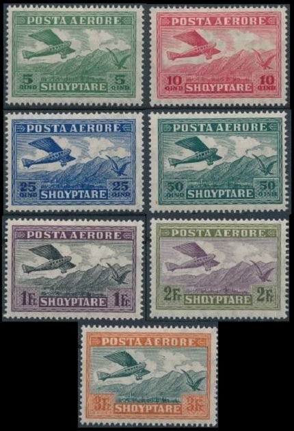

HOME PAGE
These Albanian hand-stamped overprints exist doubled and inverted. The hand-stamped overprints on some of the 20 Para, 1 Piaster, and 2 Piaster denominations also exist in red, blue, and violet, though they were not officially issued in those colors. The six Albania stamps shown above illustrate other major varieties of the 1913 hand-stamped overprints. The three stamps at the top of the image show the hand-stamped overprints with the additional "ب"overprint. The three stamps at the bottom of the scan show other varieties and the re-valued 20 Para stamp. These varieties will be described in the tables below. The catalog detail, for overprinted Turkish stamps of 1908 that have the additional "ب" overprint in carmine or blue, is as follows. 10 Pa. (1913 - Sc. #2) - Blue Green. The catalog detail, for overprinted Turkish stamps of 1909 that have the additional "ب" overprint in carmine or blue, is as follows. 10 Pa. (1913 - Sc. #13A) - Blue Green. 20 Pa. (1913 - Sc. #14) - Carmine Rose. 01 Pi. (1913 - Sc. #15) - Bright Blue. The catalog detail, for overprinted Turkish NEWSPAPER stamps of 1910-1911, is as follows. 02 Pa. on 05 Pa. (1913 - Sc. N/L) - Ocher. (NOT REGULARLY ISSUED) 02 Pa. (1913 - Sc. #17) - Olive Green. The catalog detail, for overprinted Turkish POSTAGE DUE stamps of 1908, is as follows. 01 Pi. (1913 - Sc. #18) - Black on Deep Rose. 02 Pi. (1913 - Sc. N/L) - Black on Deep Rose. (NOT REGULARLY ISSUED) The catalog detail, for overprinted 20 Para Turkish stamps of 1909 that are re-valued to 10 Para, is as follows. 10 Pa. on 20 Pa. (1913 - Sc. #19) - Carmine Rose. These hand-stamp-overprinted Turkish stamps that are marked ... (NOT REGULARLY ISSUED) ... were not regularly issued for postal use, but they were provided to some stamp dealers. They occasionally appear in major auction sales, usually bringing five-figure realizations. The seven Albania stamps shown above were issued in July and August of 1913. They are hand-stamped on white laid paper, imperforate, and they were issued without gum. The denominations are typewritten in violet. The catalog detail, for hand-stamps WITHOUT eagle and typewritten denomination, is as follows. 01 Pi. (1913 - Sc. #20) - Black. This stamp exists with sewing machine perforations, and as such, it is very scarce. The catalog detail, for hand-stamps WITH eagle and typewritten denomination, is as follows. 10 Pa. (1913 - Sc. #21) - Violet. 20 Pa. (1913 - Sc. #22) - Red & Black. 01 Gr. (1913 - Sc. #23) - Black. 02 Gr. (1913 - Sc. #24) - Blue & Violet. 05 Gr. (1913 - Sc. #25) - Violet & Blue. 10 Gr. (1913 - Sc. #26) - Blue.
Albania stamps for airmail letter postage, issued between 1925 and 1929, all feature the same design, with that being a contemporary commercial passenger aircraft flying above a mountainous landscape. As with the pictorial definitive postage stamps of this time, new airmail stamps for special events were created by overprinting existing airmail stamps. The monoplane shown on these stamps is probably a German-built Dornier (or similar model) passenger aircraft of the type used by the German "Aero-Lloyd" charter airline. They were the parent company of the Albanian "Adria Aero-Lloyd" domestic airline, which was founded in February 1925. At the time, "Adria Aero-Lloyd" provided domestic passenger service between Tirane, Shkoder, Vlore, and Korce. The seven airmail stamps shown above (Sc. #C1-C7) were issued on May 30, 1925. These stamps are typographed on paper that is watermarked lozenges, and they are all perforated 14. These airmail stamps exist imperforate, and as such, they are rare. An example is shown at the top of this page.  The seven diagonally overprinted airmail stamps shown above (Sc. #C8-C14) were issued on January 18, 1927, identifying Albania as a Republic. The diagonal overprint on the stamps is "Rep[ublika] Shqiptare" or the "Republic of Albania". These stamps exist with inverted and double overprints. Examples of them are relatively common and quite affordable. The seven overprinted airmail stamps shown above (Sc. #C15-C21) were issued on April 21, 1928, to celebrate the First International Flight by Adria Aero-Lloyd from Vlore, Albania to Brindisi, Italy. The overprint on the stamps is "REP SHQIPTARE / Fluturim' i I-ar / Vlone-Brindisi / 21.IV.1928" or the "Republic of Albania / Flight by Air / 21 April 1928". The distance from Vlore to Brindisi is about 83 miles. In a passenger aircraft of the time, the trip would have taken less than one hour. The 5 Q. denomination exists with an inverted overprint. It is not terribly expensive. A "SHQIRTARE" overprint error occurs once in every pane of stamps. Its value is about three times that of the regular stamp. The seven overprinted airmail stamps shown above (Sc. #C22-C28) were issued on December 1, 1929, identifying Albania as a Kingdom. The overprint on the stamps is "Mbr[eteri] Shqiptare" or the "Kingdom of Albania". Most of the stamps in this set are rather expensive, and as would be expected, forgeries of the overprint exist.